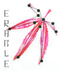

Your DBGWAS [version 0.5.4 git commit fatal: not a git repository (or any of the parent directories): .git] results
Show arguments used to produce these results
-strains = /Raw/Amuc//strains -skip1 -skip2 -caldera -pt-db = /Raw/Amuc//amuc.refseq.sequences -output = /Output/Amuc//CALDERA -k = 31 -SFF = q100 -nh = 5 -maf = 0.01 -phenoThreshold = 0.0 -GEMMA-path = <DBGWAS_lib>/gemma.0.93b -Blast-path = <DBGWAS_lib>/ -phantomjs-path = <DBGWAS_lib>/phantomjs -Rscript-path = Rscript -nb-cores = 1 -verbose = 1
Show figures on lineage effect
Re-run DBGWAS with a newick tree file (-newick parameter) to view figures on lineage effect.
Hide filters
Filters:
Sort by:
CCS p-value
Number of CCS
Asc
Desc
Apply